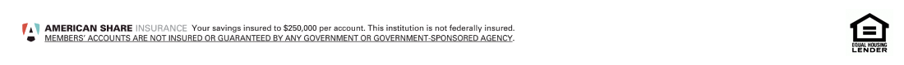

Thank you for expressing your interest in our mortgage services! Our member service representatives will review your submission and get in touch with you as soon as possible!
*1.99% introductory Annual Percentage Rate (APR) shown for Home Equity Lines of Credit is a fixed rate for the first 6 billing cycles from credit line open date and is available on Home Equity Lines with an 80% or less loan-to-value (LTV). Subject to credit approval and collateral evaluation. Offer available for new applications submitted May 15 - August 30, 2017. Lifetime APR after the introductory period is variable and based on the highest Wall Street Journal published Prime Rate, adjusted on a monthly basis. Higher rates may apply due to an increase in the Prime Rate and/or your individual credit. As of 4/1/17 the Prime Rate was 4.00%. Minimum APR is 3.75%, maximum is 18.00%. Property and/or flood insurance is required. Rates subject to change without notice. Additional restrictions, limitations, and exclusions may apply. Contact the credit union for additional details.
